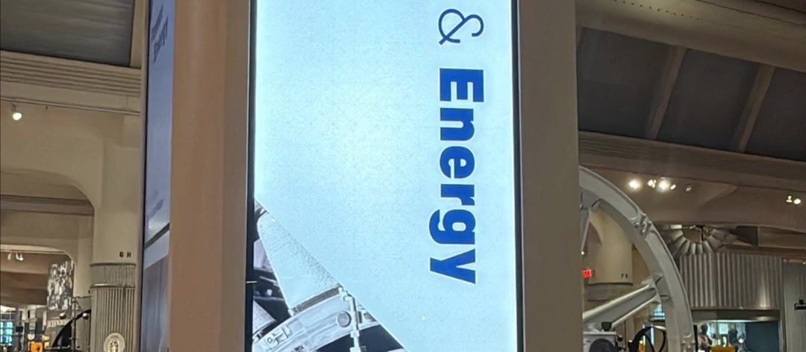
Designing an Interactive Museum Experience for Power & Energy
Project Overview
The goal of this project was to enhance The Henry Ford Museum’s Power & Energy exhibit through a multi-sided interactive digital column that serves as both a visual entrance marker and a centralized storytelling experience. Furthermore, the column was inspired by an existing column in a nearby exhibit.
The column was designed for student groups, families, and general museum visitors, the column combines video content, interactive content, wayfinding, and artifact highlights to communicate the exhibit’s central themes—including the interconnectedness and tradeoffs involved in energy production, distribution, and use.
The experience also incorporates content from project partner ITC( International Transmission Company) and was built in Appspace, the museum’s institutional content management system, allowing internal teams to maintain and update the experience over time.
The Challenge
Capturing Visitor Attention
In an exhibit filled with large-scale artifacts and live programming, the digital column needed to capture attention without competing with the physical environment.
How might we create an intuitive digital experience that encourages visitors of all ages to pause, explore, and learn?
Balancing Museum and Sponsor Goals
The experience needed to support The Henry Ford’s educational mission while incorporating ITC’s industry, career, and employee stories without feeling overly promotional.
How might we introduce students to careers in power and energy while balancing visitor, museum, and sponsor needs?
The Approach/ UX Design
To address visitor, educational, wayfinding, and sponsor needs, I developed a multi-sided experience that combined passive storytelling with touch-based exploration. Each side of the column served a distinct purpose while contributing to a cohesive visitor journey.
The experience included:
- Exhibit wayfinding: A backlit graphic identifying the Power & Energy exhibit and introducing its central themes.
- Innovation stories: Condensed Innovation Nation episodes highlighting innovation across power and energy. Innovation Nation is an educational television series produced by The Henry Ford that explores inventions, innovators, and technological advancements shaping the world.
- Interactive exploration: A touch-based map visualizing power transmission infrastructure across Michigan and the United States.
- Career discovery: ITC employee interviews introducing students to careers within the power and energy industry.
- Artifact interpretation: A backlit graphic highlighting key artifacts and providing additional historical context based on what was inside the exhibit.
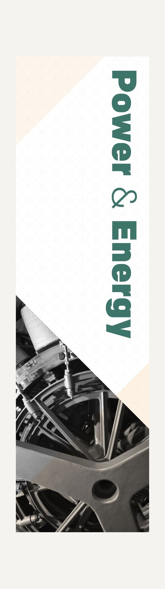
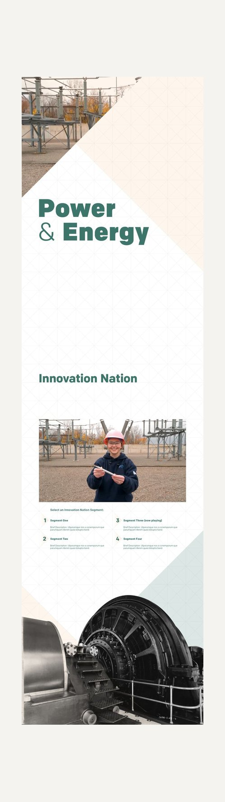
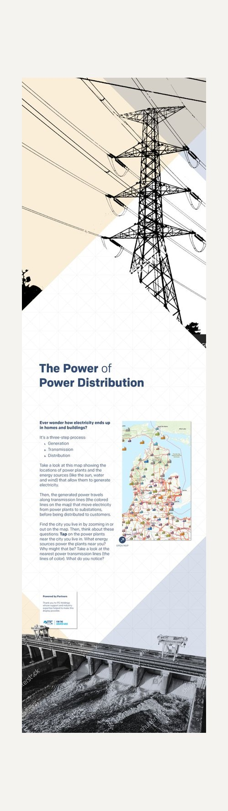
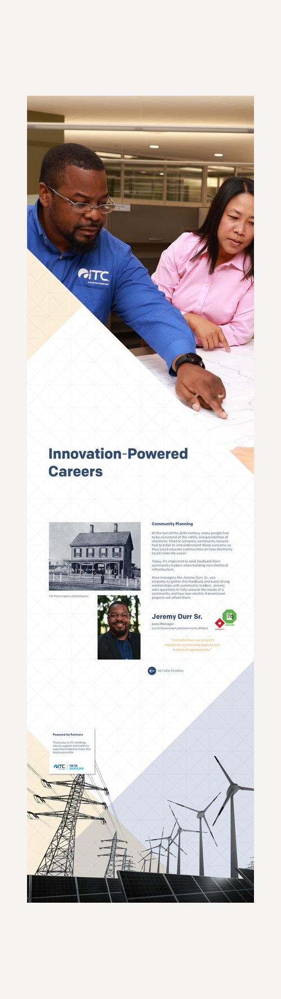
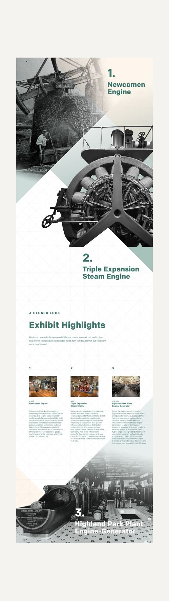
I began to take the existing column we have in the Agriculture column and talk through how the Power & Energy column would look and feel. In addition I began to sketch and create lo- fi wireframes to share with key stakeholders for feedback( See below).
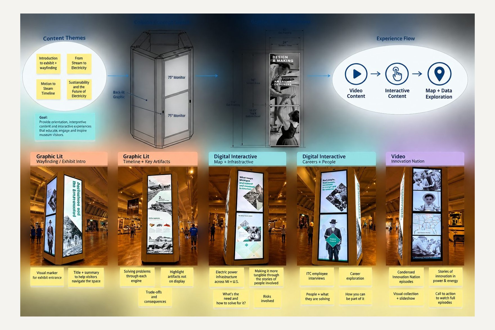
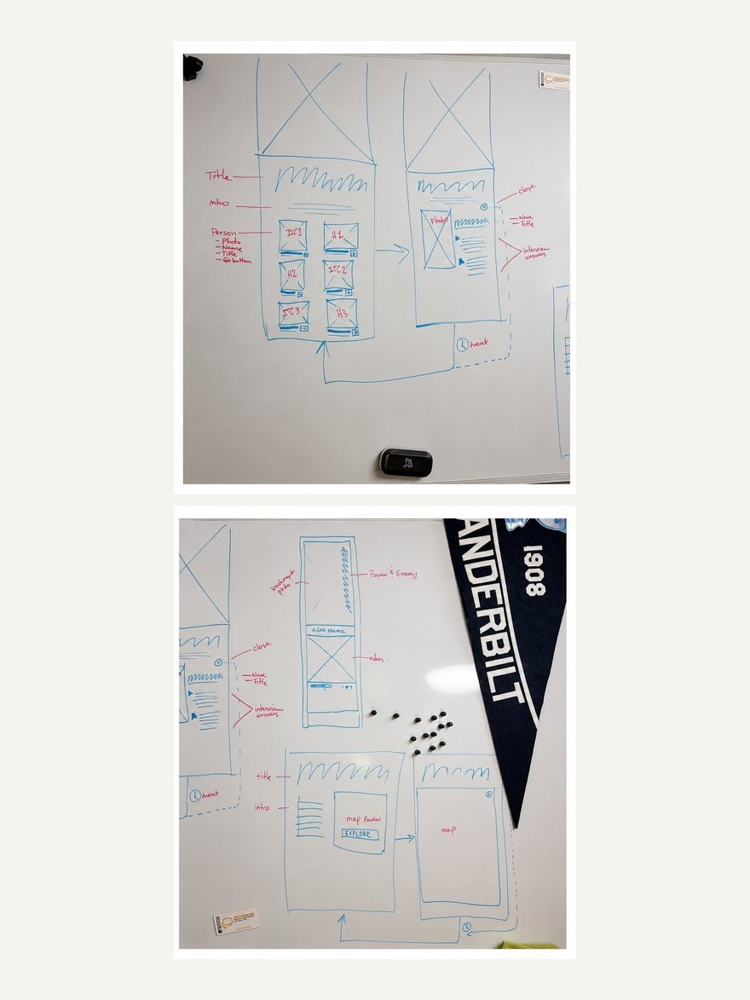
Discovery & Stakeholder Alignment
Once the content strategy for each side of the column was established, I began developing the individual experiences and determining how each could support the broader goals of the Power & Energy exhibit. Visually, the backlit graphics were designed to maintain consistency with the existing exhibit while the interactive content introduced new opportunities for visitor engagement.
For the ITC career experience, the goal was to introduce visitors to the range of careers that support the power and energy industry. Working with ITC stakeholders, I identified three employee volunteers representing different areas of the organization: Safety & Security, Engineering, and Community Planning. I interviewed each employee about their role, responsibilities, career path, and connection to the energy industry. These conversations became the foundation for the career-focused content featured within the interactive. Employee interviews and responses informed the content shown below. Furthermore, below is a summary of highlighted content that was relevant and used in the final wireframes
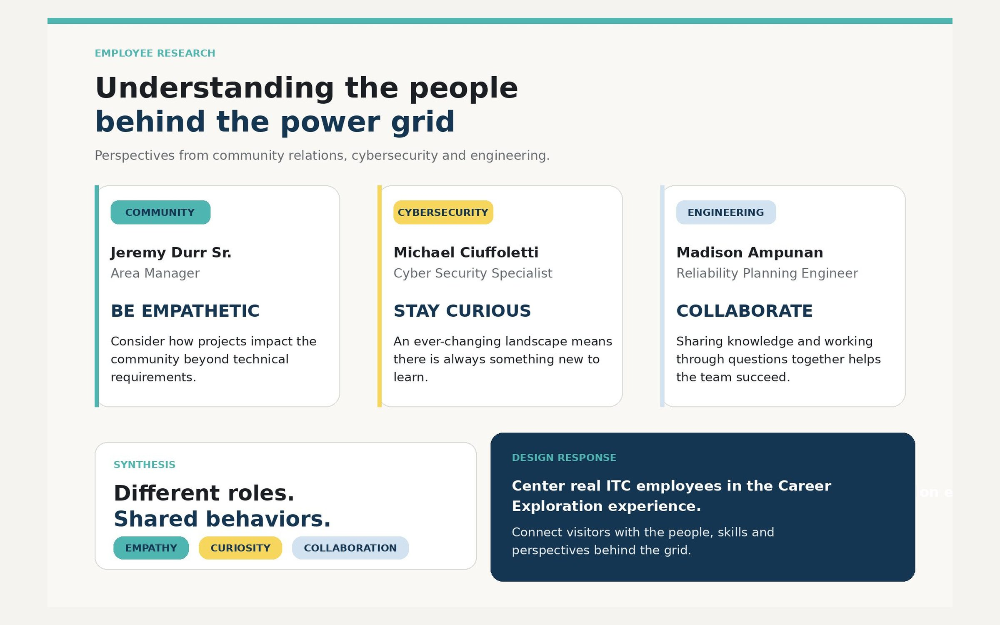
In addition to the employee stories, I explored how the experience could connect careers in energy to objects, stories, and experiences visitors could encounter elsewhere in the museum. I developed short prompts for each career area using The Henry Ford’s Model i framework, an educational model that encourages learners to develop the habits and actions of innovators through curiosity, questioning, collaboration, and problem-solving. Because engaging younger visitors was an important project goal, these prompts were intentionally written to encourage exploration beyond the screen—connecting the digital experience back to the physical museum and inviting visitors to continue discovering how innovation, engineering, safety, and community planning shape the world around them.
Excerpts from the UX copy below:
“Engineering Together: Thomas Edison employed dozens of engineers, inventors, and chemists at the Menlo Park Laboratory, where they collectively developed hundreds of technological innovations. Experience Menlo Park Laboratory for yourself in Greenfield Village.”
“Safety & Security: As electric companies built new infrastructure around the country, they hired workers to construct and inspect the new poles and lines. To learn more, visit the Edison Illuminating Company’s Station A in Greenfield Village.”
“Community Planning: Thomas Edison tested and gathered feedback on his experimental lighting system with the men and women who lived at the Sarah Jordan Boarding House. Step inside the Boarding House in Greenfield Village.”
Designing the Interactive Experience
I then began finalizing the experience, focusing on the interaction touchpoints, content flow, and visual design. This was an iterative process informed by an existing interactive column within the museum’s Agriculture exhibit.
I began by evaluating the Agriculture column’s existing user flow, including its interaction rules, touchpoints, and the way content was distributed across the different sides of the column. I also reviewed findings from previous guest observations to understand how visitors actually approached, navigated, and engaged with the experience.
These behavioral insights became an important input into the final design. They helped determine how visitors would move through the Power & Energy experience, which types of content were best suited for each side of the column, and how the overall interaction flow should be structured.
The resulting flow and content distribution are illustrated in the diagram below. The final wireframes shown below.
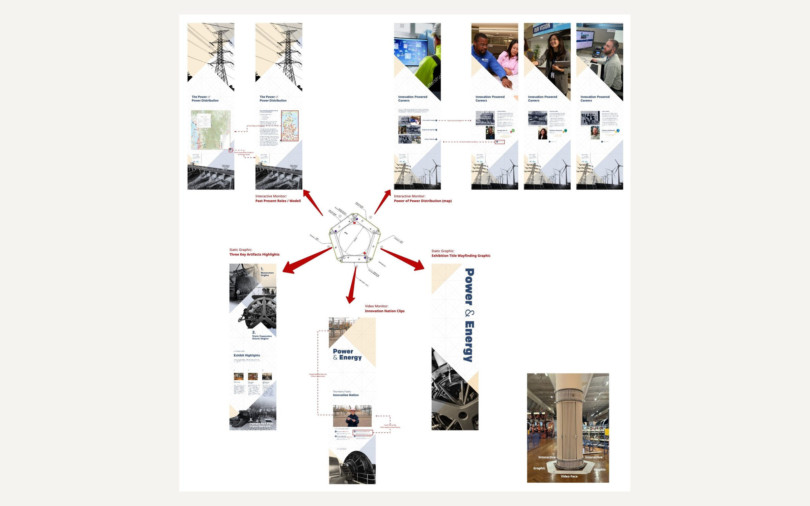
CMS Integration & Implementation
The museum uses multiple content management systems to publish and maintain digital experiences. For this project, an institutional priority was to host and manage the content within Appspace, a cloud-based platform used to organize, publish, and update digital content across devices.
I collaborated closely with the Appspace team to ensure all final assets met the required dimensions, aspect ratios, and technical specifications. I led conversations with the Appspace partner manager, communicating the experience’s interaction points, user flow, and information architecture to guide the platform setup. Once configured, I built and managed the content channels, programmed the interactive interface, and implemented ongoing updates as the content and experience evolved. Below are the CMS channels within App Space.
Installation & Fabrication
For the final installation, we partnered with Sleet Custom Cabinets, a fabricator familiar with the museum environment who had previously built the interactive columns and enclosures within the Agriculture exhibit. Building on this existing design helped maintain consistency across the museum while providing a proven framework for the new Power & Energy columns.
I worked closely with the fabricator to provide precise dimensions, specifications, and printing requirements for the backlit graphics. The new columns were designed to match the dimensions and construction of the existing Agriculture columns.
My role during this phase was to coordinate and manage the various teams involved in fabrication and installation, ensuring that the physical build, digital components, graphics, and technical requirements came together successfully and on schedule.
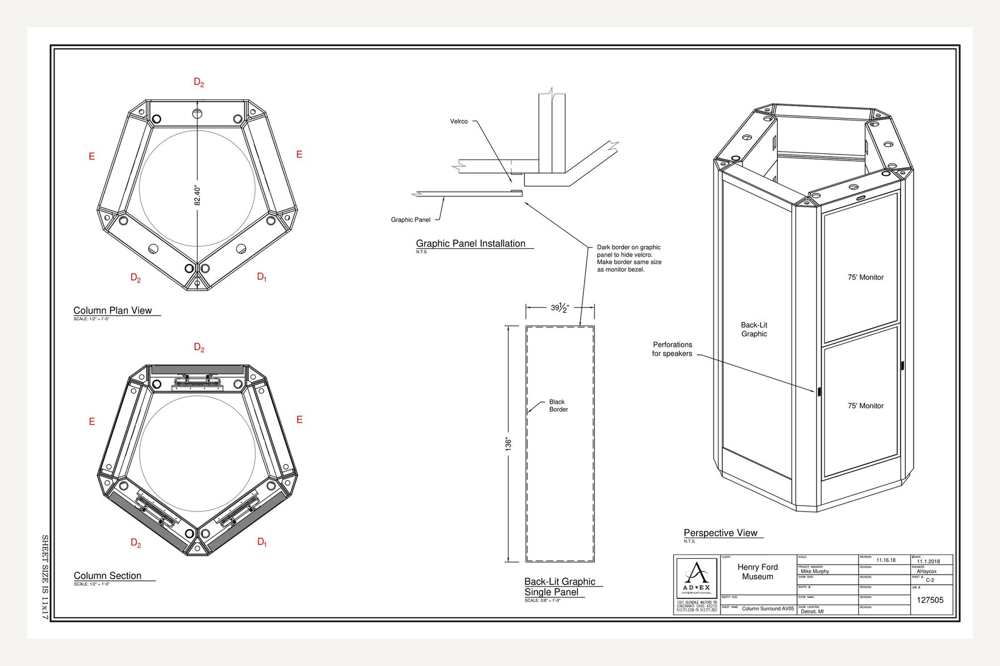
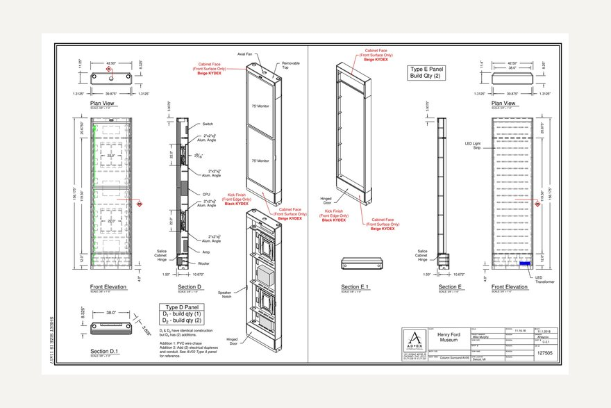
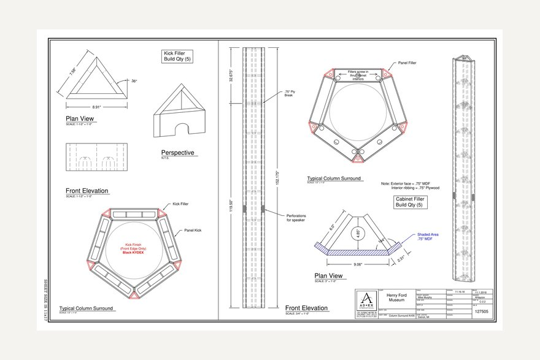
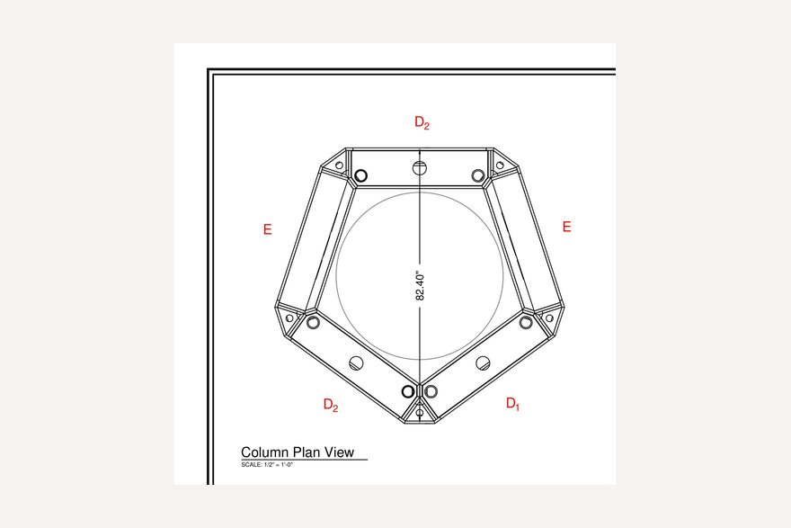
Results & Impact
The Power & Energy interactive column transformed the exhibit entrance into a more intentional visitor touchpoint, creating a clear visual anchor while introducing new opportunities for exploration and learning.
The final experience supported multiple visitor needs through artifact discovery, career exploration, wayfinding, and interactive learning. It also advanced institutional technology goals by integrating the experience into the museum’s CMS ecosystem, creating a more flexible framework for managing and updating digital content.
For project sponsor ITC, the experience provided a meaningful way to connect the Power & Energy story to the people behind the industry by highlighting employee perspectives and diverse career pathways.
Ongoing Evaluation
Because the experience was recently launched, long-term visitor impact has not yet been measured. The next phase of evaluation will focus on understanding how visitors engage with the column in the museum environment.
Planned UX research includes museum volunteer focus groups, testing with The Henry Ford Academy students, and in-gallery visitor observation. Findings will be used to evaluate discoverability, usability, engagement, and opportunities for future content and interaction improvements.
10
Reflection
This project expanded my understanding of UX design beyond traditional mobile and desktop interfaces. Designing for a physical museum environment required me to consider not only the interface itself, but also spatial interaction, accessibility, visitor behavior, and the physical context surrounding the experience.
Working across touch displays, backlit graphics, static interpretation, and physical exhibit elements also challenged me to think about information architecture at an environmental scale—determining not only how visitors would navigate content, but where that content should live and how each touchpoint could contribute to a cohesive experience.
Most importantly, the project reinforced that UX does not stop at the screen. Creating an effective museum experience requires balancing digital interaction with physical space, technical constraints, accessibility, storytelling, and the different ways visitors choose to engage.
—